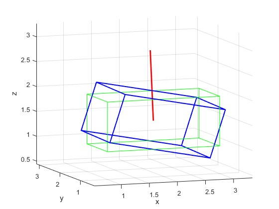

Quaternion
Đôi chút về Quaternion
Nếu các bạn đã làm game hay đồ họa 3D, bạn có thể đã nghe đến khái niệm Quaternion. Bạn đã thử lên goole search và bạn tìm được khái niệm như sau:
The unit quaternions give a group structure on the 3-sphere S3 isomorphic to the groups Spin(3) and SU(2), i.e. the universal cover group of SO(3). The positive and negative basis vectors form the eight-element quaternion group.
Welp không ai hiểu cái này cả, kể cả tôi vì tôi không học chuyên ngành toán, tuy vậy thực ra Quaternion khá là dễ dùng, bạn không cần hiểu nhóm lie và đại số lie để dùng được cái này. Quaternion lợi dụng số ảo (i, j, k) để biểu diễn một phép quay trong không gian 3D, đặc biệt nó còn tránh được hiện tượng gimbal lock(bạn tự tra youtube tìm hiểu nhé ;v). Cụ thể hơn, một quaternion có dạng $$q = a + bi + cj + dk $$ trong đó $a \in \mathbb{R}$ là phần thực và $$bi + cj + dk$$ là phần ảo với $b,c,d \in \mathbb{R}$.
Quaternion cho phép quay
Để biểu diễn một phép quay trong không gian 3D, chúng ta có thể sử dụng một quaternion đơn vị (unit quaternion). Một quaternion đơn vị có dạng:
$$q = \cos\left(\frac{\theta}{2}\right) + \sin\left(\frac{\theta}{2}\right)(xi + yj + zk)$$
Trong đó $\theta$ là góc quay và $(x, y, z)$ là vector đơn vị chỉ hướng quay. Quaternion này có thể được sử dụng để quay một vector trong không gian 3D bằng cách sử dụng phép nhân quaternion.
Lưu ý Quaternion cho phép quay luôn luôn là 1 quaternion đơn vị tức là $$x^2 + y^2 + z^2 = 1$$
Tôi đã minh họa cho các bạn trên matlab, với đường màu đỏ là vector quay, và hộp màu xanh lá cây là hộp ban đầu và xanh nước biển là hộp đã được xoay theo Quaternion

Để áp dụng phép quay ta sẽ có công thức như sau: $$q^{'} = q \cdot p \cdot q^{-1}$$ với $p^{-1}$ là phép quay nghịch đảo của quaternion $p$ và có công thức như sau $$p^{-1} = \cos\left(\frac{\theta}{2}\right) - \sin\left(\frac{\theta}{2}\right)(xi + yj + zk)$$
1 Số công thức quy đổi từ Quaternion sang các phép quay khác
Để quy đổi từ Quaternion sang ma trận quay ta sẽ có công thức như sau:
$$R = \begin{bmatrix}1 - 2y^2 - 2z^2 & 2xy - 2zw & 2xz + 2yw \\\\ 2xy + 2zw & 1 - 2x^2 - 2z^2 & 2yz - 2xw \\\\ 2xz - 2yw & 2yz + 2xw & 1 - 2x^2 - 2y^2\end{bmatrix}$$
Để quy đổi từ Quaternion sang Euler angles ta sẽ có công thức như
$$\begin{cases}roll = \arctan\left(\frac{2(q_0q_1 + q_2q_3)}{1 - 2(q_1^2 + q_2^2)}\right)\\\\ pitch = \arcsin\left(2(q_0q_2 - q_3q_1)\right)\\\\ yaw = \arctan\left(\frac{2(q_0q_3 + q_1q_2)}{1 - 2(q_2^2 + q_3^2)}\right)\end{cases}$$
Kết luận
Quaternion là một công cụ mạnh mẽ để biểu diễn và tính toán các phép quay trong không gian 3D, đặc biệt là khi cần tránh hiện tượng gimbal lock. Việc hiểu và sử dụng quaternion có thể giúp bạn trong các ứng dụng về Robotics sau này
Áp dụng
ừng vôi đi đâu, học mà không có áp dụng thì sao nhớ được :))) đây là 1 số bài viết sẽ liên quan tới Quaternion:
- Màng lọc Magwick
- tf2::Quaternion
Bài viết đến đây là hết cảm ơn các bạn đã xem